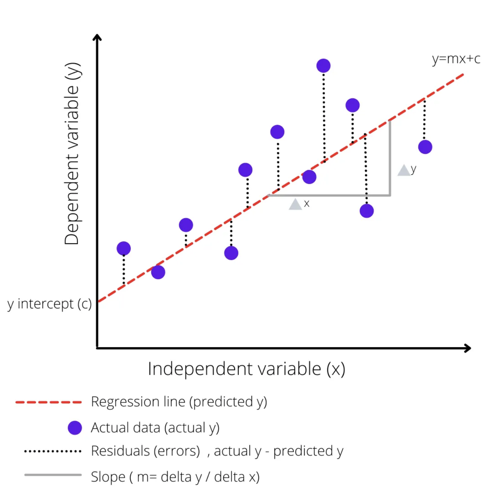

Machine learning with Tidymodels
- From base R to tidymodels;
- Split our data into training and test sets;
- Preprocess the training data;
- Specify a linear regression model;
- Train our model on the training data;
- Transform the test data and obtain predictions using our trained model.
In this case study, you will predict houses selling price from characteristics of these houses, like size and layout of the living space in the house. What kind of model will you build?
To predict a continuous, numeric quantity like selling price, use regression models.
Load in the packages we’ll be using for modelling:
library(tidyverse)
library(tidymodels)
library(rsample)
library(vip)
library(qs)
theme_set(theme_minimal())Build a simple linear regression model using base R
In a linear model, we assume that there is a linear relationship between the input variable(s) and the output variable. This means that as the input variable(s) increase or decrease, the output variable changes in a straight line.
Imagine you have a scatter plot with your data points all over it. A linear model is like drawing a straight line through the scatter plot that best fits all the points. The slope and intercept of this line are chosen in such a way that the distance between the line and all the points is minimized. This line is then used to predict the output for new input values.

The straight red dotted line represents the linear model equation \(y=mx+c\), where \(c\) is the y-intercept of the regression line, \(m\) is the slope of the regression line, and \(y\) is the expected value for y for the given \(x\) value.
#fit a linear model
ames_lm <- lm(sale_price ~ gr_liv_area, data = ames_data)
#Print the summary of the model
summary(ames_lm)
Call:
lm(formula = sale_price ~ gr_liv_area, data = ames_data)
Residuals:
Min 1Q Median 3Q Max
-201358 -30336 -1655 23303 330127
Coefficients:
Estimate Std. Error t value Pr(>|t|)
(Intercept) 6773.484 3260.418 2.077 0.0378 *
gr_liv_area 116.225 2.075 56.006 <2e-16 ***
---
Signif. codes: 0 '***' 0.001 '**' 0.01 '*' 0.05 '.' 0.1 ' ' 1
Residual standard error: 54570 on 2923 degrees of freedom
Multiple R-squared: 0.5176, Adjusted R-squared: 0.5175
F-statistic: 3137 on 1 and 2923 DF, p-value: < 2.2e-16R-squared value explains the variability of y with respect to x:
- varies between 0 to 1 (0-100%);
- R-squared values closer to 0 mean the regression relationship is very low;
- R-squared values closer to 1 mean the regression relationship is very strong.
Let’s plot our linear regression model:
ames_data %>%
ggplot(aes(x=gr_liv_area,y=sale_price)) +
geom_point(alpha=0.25) +
geom_abline(
slope = coef(ames_lm)[["gr_liv_area"]],
intercept = coef(ames_lm)[["(Intercept)"]],
color = "red"
) +
labs(
x = "Gross Living Area",
y = "Sale Price"
)Build a linear regression model using Tidymodels
When you type library(tidymodels), you load a collection of packages for modeling and machine learning using tidyverse principles. Some benefits on using Tidymodels include:
- consistent syntax across all of its packages, making it easier to learn and use;
- code is more readable and easier to maintain;
- built around the tidy data principles, which emphasizes the importance of organizing data in a consistent and structured way;
- modular design, each package serving a specific purpose;
- active community of developers and users who are available to answer questions and provide support;
- integration with other tidyverse packages like dplyr, ggplot2, and purrr, allowing for a more streamlined workflow when working with data
The first thing we are going to practice is splitting the data into a training set and a testing set. The tidymodels package rsample has functions that help you specify training and testing sets:
set.seed(42) #so we all get the same results
ames_split <- ames_data %>%
initial_split(prop = 0.8,
strata = sale_price) #stratification
ames_train <- training(ames_split)
ames_test <- testing(ames_split)
qsave(ames_train, "../_models/ames_train.qs")
qsave(ames_test, "../_models/ames_test.qs")Stratified sampling would split within each quartile. Splitting with stratification involves dividing the data into subsets based on the target/outcome variable’s distribution, such that the proportion of each class in the target variable is maintained in each subset. This ensures that the training and testing sets have a similar distribution of the target variable, which can lead to more reliable model performance estimates. 
The code here takes an input data set and puts 80% of it into a training dataset and 20% of it into a testing dataset; it chooses the individual cases so that both sets are balanced in selling price.
Let’s check if the distribution of the selling price is the same in the testing and training datasets:
ames_train %>%
ggplot(aes(x = log(sale_price), col = "red", fill = NULL)) +
geom_density() + theme_minimal() +
geom_line(data = ames_test,
stat = "density",
col = "blue") + theme(legend.position="none")
Feature engineering
We might want to modify our predictors columns for a few reasons:
- The model requires them in a different format;
- The model needs certain data qualities;
- The outcome is better predicted when one or more columns are transformed in some way (a.k.a “feature engineering”).
In tidymodels, you can use the recipes package, an extensible framework for pipeable sequences of feature engineering steps that provide preprocessing tools to be applied to data.
Some of these steps can include:
- Scaling and centering numeric predictors;
- Removing skewness from numeric variables;
- One-hot and dummy variable encoding for categorical variables;
- Removing correlated predictors and zero variance variables;
- Imputing missing data.
Statistical parameters for the steps can be estimated from an initial data set and then applied to other data sets.
The resulting processed output can be used as inputs for statistical or machine learning models.
ames_rec <-
recipe(sale_price ~ ., data = ames_train) %>% #assigns columns to roles of “outcome” or “predictor” using the formula
step_log(sale_price, base = 10) %>%
step_other(all_nominal(), threshold = 0.01) %>% #useful when you have some factor levels with very few observations, all_nominal selects both characters and factors, pools infrequently occurring values (frequency less than 0.01) into an "other" category
step_nzv(all_predictors()) %>% #remove predictors that are highly sparse and unbalanced
step_normalize(all_numeric_predictors()) %>% #normalize the data to a standard range by dividing each observation by the standard deviation of the feature
step_dummy(all_nominal_predictors(), one_hot = TRUE) #create numeric representations of categorical data
ames_rec
qsave(ames_rec, "../_models/ames_rec.qs")Note that each successive step() function adds a preprocessing step to our recipe object in the order that they are provided. The preprocessing recipe ames_rec has been defined but no values have been estimated.
Does it make sense to apply these preprocessing steps to the test set?
No, it doesn’t. You want the set test to look like new data that your model will see in the future.
prep(), juice(), bake()
- The
prep()function takes a recipe and computes everything so that the preprocessing steps can be executed. Note that this is done with the training data.
ames_prep <- prep(ames_rec)
ames_prepThe bake() and juice() functions both return data, not a preprocessing recipe object.
- The
bake()function takes a prepped recipe (one that has had all quantities estimated from training data) and applies it tonew_data. That new_data could be the training data again or it could be the testing data (with the TRAINING parameters).
ames_test_baked <- bake(ames_prep, new_data = ames_test)- The
juice()function is a nice little shortcut. When wejuice()the recipe, we squeeze that training data back out, transformed in the ways we specified.
Let’s compare the bake() and juice() outputs:
bake(ames_prep, new_data = ames_train)# A tibble: 2,339 × 224
lot_frontage lot_area mas_v…¹ bsmt_…² bsmt_…³ bsmt_…⁴ total…⁵ first…⁶ secon…⁷
<dbl> <dbl> <dbl> <dbl> <dbl> <dbl> <dbl> <dbl> <dbl>
1 0.374 -0.212 -0.569 -1.42 0.162 -1.27 -0.388 -0.726 -0.786
2 0.374 0.0383 -0.569 -1.42 -0.298 -0.288 -0.430 -0.774 -0.786
3 -0.137 -0.733 -0.569 -1.42 -0.298 0.341 0.0550 -0.231 -0.786
4 -1.01 -0.943 -0.569 1.27 -0.298 0.630 -0.497 -0.848 -0.786
5 -0.0770 -0.273 -0.569 1.27 -0.298 0.816 -0.303 -0.631 -0.786
6 -0.227 -0.359 -0.569 -1.42 0.416 -1.27 -0.714 -1.07 -0.786
7 0.374 -0.0453 -0.569 1.27 -0.298 0.584 -0.544 -0.382 -0.786
8 0.314 -0.149 -0.569 0.372 -0.298 -1.27 -2.48 0.427 0.579
9 -1.73 -0.0430 -0.391 -0.970 -0.298 -0.288 -0.388 -0.678 -0.786
10 -1.73 -0.392 -0.569 -1.42 -0.298 -0.404 -0.0137 -0.308 -0.786
# … with 2,329 more rows, 215 more variables: gr_liv_area <dbl>,
# bsmt_full_bath <dbl>, bsmt_half_bath <dbl>, full_bath <dbl>,
# half_bath <dbl>, bedroom_abv_gr <dbl>, tot_rms_abv_grd <dbl>,
# fireplaces <dbl>, garage_cars <dbl>, garage_area <dbl>, wood_deck_sf <dbl>,
# open_porch_sf <dbl>, mo_sold <dbl>, year_sold <dbl>, longitude <dbl>,
# latitude <dbl>, time_since_remodel <dbl>, house_age <dbl>,
# sale_price <dbl>, ms_sub_class_One_Story_1946_and_Newer_All_Styles <dbl>, …juice(ames_prep) # A tibble: 2,339 × 224
lot_frontage lot_area mas_v…¹ bsmt_…² bsmt_…³ bsmt_…⁴ total…⁵ first…⁶ secon…⁷
<dbl> <dbl> <dbl> <dbl> <dbl> <dbl> <dbl> <dbl> <dbl>
1 0.374 -0.212 -0.569 -1.42 0.162 -1.27 -0.388 -0.726 -0.786
2 0.374 0.0383 -0.569 -1.42 -0.298 -0.288 -0.430 -0.774 -0.786
3 -0.137 -0.733 -0.569 -1.42 -0.298 0.341 0.0550 -0.231 -0.786
4 -1.01 -0.943 -0.569 1.27 -0.298 0.630 -0.497 -0.848 -0.786
5 -0.0770 -0.273 -0.569 1.27 -0.298 0.816 -0.303 -0.631 -0.786
6 -0.227 -0.359 -0.569 -1.42 0.416 -1.27 -0.714 -1.07 -0.786
7 0.374 -0.0453 -0.569 1.27 -0.298 0.584 -0.544 -0.382 -0.786
8 0.314 -0.149 -0.569 0.372 -0.298 -1.27 -2.48 0.427 0.579
9 -1.73 -0.0430 -0.391 -0.970 -0.298 -0.288 -0.388 -0.678 -0.786
10 -1.73 -0.392 -0.569 -1.42 -0.298 -0.404 -0.0137 -0.308 -0.786
# … with 2,329 more rows, 215 more variables: gr_liv_area <dbl>,
# bsmt_full_bath <dbl>, bsmt_half_bath <dbl>, full_bath <dbl>,
# half_bath <dbl>, bedroom_abv_gr <dbl>, tot_rms_abv_grd <dbl>,
# fireplaces <dbl>, garage_cars <dbl>, garage_area <dbl>, wood_deck_sf <dbl>,
# open_porch_sf <dbl>, mo_sold <dbl>, year_sold <dbl>, longitude <dbl>,
# latitude <dbl>, time_since_remodel <dbl>, house_age <dbl>,
# sale_price <dbl>, ms_sub_class_One_Story_1946_and_Newer_All_Styles <dbl>, …Note that the juice() output is the same as bake(ames_rep, new_data = ames_train) and is just a shortcut that we are going to use later.
Build the model
In tidymodels, you specify models using three concepts:
- type differentiates models such as logistic regression, linear regression, and so forth;
- mode includes common options like regression and classification, some model types support either of these while some only have one mode;
- engine is the computational tool which will be used to fit the model.
We will specify the model using the parsnip package. Many functions have different interfaces and arguments names and parsnip standardizes the interface for fitting models as well as the return values.
#a linear regression model specification
ames_model <- linear_reg() %>% #pick a model
set_engine("lm") #set the engine
#set_mode("regression") we don't need this as the model linear_reg() only does regression
#view model properties
ames_modelLinear Regression Model Specification (regression)
Computational engine: lm Fit the model
Now we are ready to train our model object on the training data. We can do this using the fit() function from the parsnip package. The fit() function takes the following arguments:
- a parnsip model object specification;
- a model formula
- a data frame with the training data
The code below trains our linear regression model on the prepped training data. In our formula, we have specified that sale_price is the response variable and included all the rest as our predictor variables.
ames_fit <- ames_model %>%
fit(sale_price ~ .,
data=juice(ames_prep))
# View lm_fit properties
ames_fitparsnip model object
Call:
stats::lm(formula = sale_price ~ ., data = data)
Coefficients:
(Intercept)
4.225e+00
lot_frontage
1.510e-03
lot_area
5.634e-03
mas_vnr_area
3.178e-03
bsmt_fin_sf_1
2.910e-02
bsmt_fin_sf_2
-2.438e-03
bsmt_unf_sf
-9.865e-03
total_bsmt_sf
3.052e-02
first_flr_sf
4.657e-03
second_flr_sf
9.635e-03
gr_liv_area
4.895e-02
bsmt_full_bath
4.946e-03
bsmt_half_bath
1.160e-03
full_bath
7.528e-03
half_bath
6.568e-03
bedroom_abv_gr
-3.780e-03
tot_rms_abv_grd
-4.477e-05
fireplaces
5.691e-03
garage_cars
8.626e-03
garage_area
6.286e-03
wood_deck_sf
1.943e-03
open_porch_sf
1.901e-03
mo_sold
-3.097e-04
year_sold
-2.016e-03
longitude
-8.325e-03
latitude
-4.980e-03
time_since_remodel
-5.556e-03
house_age
-1.929e-02
ms_sub_class_One_Story_1946_and_Newer_All_Styles
6.196e-03
ms_sub_class_One_Story_1945_and_Older
-2.177e-02
ms_sub_class_One_and_Half_Story_Finished_All_Ages
2.813e-02
ms_sub_class_Two_Story_1946_and_Newer
-1.093e-02
ms_sub_class_Two_Story_1945_and_Older
1.847e-02
ms_sub_class_Split_or_Multilevel
-2.027e-02
ms_sub_class_Split_Foyer
3.816e-03
ms_sub_class_Duplex_All_Styles_and_Ages
-2.177e-03
ms_sub_class_One_Story_PUD_1946_and_Newer
2.046e-02
ms_sub_class_Two_Story_PUD_1946_and_Newer
-2.533e-02
ms_sub_class_Two_Family_conversion_All_Styles_and_Ages
2.991e-03
ms_sub_class_other
NA
ms_zoning_Floating_Village_Residential
3.984e-02
ms_zoning_Residential_Low_Density
3.224e-02
ms_zoning_Residential_Medium_Density
2.443e-02
ms_zoning_other
NA
lot_shape_Regular
4.462e-03
lot_shape_Slightly_Irregular
4.294e-03
lot_shape_Moderately_Irregular
1.805e-02
lot_shape_other
NA
lot_config_Corner
5.998e-03
lot_config_CulDSac
1.298e-02
lot_config_FR2
-5.176e-03
lot_config_Inside
3.934e-03
lot_config_other
NA
neighborhood_North_Ames
-1.547e-02
neighborhood_College_Creek
-3.736e-02
neighborhood_Old_Town
-3.894e-02
neighborhood_Edwards
-4.494e-02
neighborhood_Somerset
1.495e-02
neighborhood_Northridge_Heights
1.344e-02
neighborhood_Gilbert
-8.690e-03
neighborhood_Sawyer
-2.252e-02
neighborhood_Northwest_Ames
-1.568e-02
neighborhood_Sawyer_West
-3.405e-02
neighborhood_Mitchell
-2.449e-02
neighborhood_Brookside
-1.037e-02
neighborhood_Crawford
1.911e-02
neighborhood_Iowa_DOT_and_Rail_Road
-4.515e-02
neighborhood_Timberland
-2.225e-02
neighborhood_Northridge
1.195e-02
neighborhood_Stone_Brook
3.834e-02
neighborhood_South_and_West_of_Iowa_State_University
-3.175e-02
neighborhood_Clear_Creek
-1.395e-02
neighborhood_Meadow_Village
-6.325e-02
neighborhood_other
NA
condition_1_Artery
-1.792e-02
condition_1_Feedr
-1.227e-02
condition_1_Norm
6.575e-03
condition_1_PosN
1.180e-02
condition_1_RRAn
-1.178e-02
condition_1_other
NA
bldg_type_OneFam
3.635e-02
bldg_type_TwoFmCon
2.470e-02
bldg_type_Duplex
NA
bldg_type_Twnhs
-1.657e-02
bldg_type_TwnhsE
NA
house_style_One_and_Half_Fin
-3.279e-02
house_style_One_Story
-9.496e-03
house_style_SFoyer
5.423e-04
house_style_SLvl
1.420e-02
house_style_Two_Story
-8.472e-03
house_style_other
NA
overall_qual_Fair
-9.709e-03
overall_qual_Below_Average
-7.711e-03
overall_qual_Average
1.465e-02
overall_qual_Above_Average
2.453e-02
overall_qual_Good
3.288e-02
overall_qual_Very_Good
5.065e-02
overall_qual_Excellent
5.328e-02
overall_qual_other
NA
overall_cond_Fair
8.424e-02
overall_cond_Below_Average
1.386e-01
overall_cond_Average
1.647e-01
overall_cond_Above_Average
1.786e-01
overall_cond_Good
1.976e-01
overall_cond_Very_Good
2.004e-01
overall_cond_Excellent
2.172e-01
overall_cond_other
NA
roof_style_Gable
3.064e-03
roof_style_Hip
1.400e-03
roof_style_other
NA
exterior_1st_AsbShng
-2.269e-02
exterior_1st_BrkFace
1.762e-02
exterior_1st_CemntBd
-6.648e-02
exterior_1st_HdBoard
-2.029e-02
exterior_1st_MetalSd
-9.188e-03
exterior_1st_Plywood
-1.778e-02
exterior_1st_Stucco
-2.030e-02
exterior_1st_VinylSd
-3.227e-02
exterior_1st_Wd.Sdng
-1.530e-02
exterior_1st_WdShing
-2.727e-02
exterior_1st_other
NA
exterior_2nd_AsbShng
-2.730e-02
exterior_2nd_BrkFace
-2.295e-02
exterior_2nd_CmentBd
4.882e-02
exterior_2nd_HdBoard
-5.905e-03
exterior_2nd_MetalSd
-5.823e-03
exterior_2nd_Plywood
-7.550e-03
exterior_2nd_Stucco
7.010e-03
exterior_2nd_VinylSd
9.093e-03
exterior_2nd_Wd.Sdng
-3.418e-03
exterior_2nd_Wd.Shng
3.114e-03
exterior_2nd_other
NA
mas_vnr_type_BrkFace
1.391e-02
mas_vnr_type_None
1.470e-02
mas_vnr_type_Stone
2.233e-02
mas_vnr_type_other
NA
exter_qual_Excellent
4.355e-02
exter_qual_Fair
-1.018e-02
exter_qual_Good
7.081e-03
exter_qual_Typical
NA
exter_cond_Fair
-5.441e-02
exter_cond_Good
-2.790e-02
exter_cond_Typical
-2.038e-02
exter_cond_other
NA
foundation_BrkTil
-2.178e-02
foundation_CBlock
-1.965e-02
foundation_PConc
-1.085e-02
foundation_Slab
6.116e-05
foundation_other
NA
bsmt_qual_Excellent
3.459e-02
bsmt_qual_Fair
6.404e-03
bsmt_qual_Good
2.045e-02
bsmt_qual_No_Basement
2.428e-02
bsmt_qual_Typical
1.874e-02
bsmt_qual_other
NA
bsmt_exposure_Av
3.624e-03
bsmt_exposure_Gd
2.669e-02
bsmt_exposure_Mn
5.688e-05
bsmt_exposure_No
-4.150e-03
bsmt_exposure_No_Basement
NA
bsmt_fin_type_1_ALQ
8.386e-02
bsmt_fin_type_1_BLQ
6.682e-02
bsmt_fin_type_1_GLQ
5.941e-02
bsmt_fin_type_1_LwQ
3.318e-02
bsmt_fin_type_1_No_Basement
NA
bsmt_fin_type_1_Rec
7.956e-03
bsmt_fin_type_1_Unf
NA
heating_qc_Excellent
7.722e-01
heating_qc_Fair
7.472e-01
heating_qc_Good
7.654e-01
heating_qc_Typical
7.598e-01
heating_qc_other
NA
central_air_N
-2.408e-02
central_air_Y
NA
electrical_FuseA
-1.545e-02
electrical_FuseF
-1.968e-02
electrical_SBrkr
-1.951e-02
electrical_other
NA
kitchen_qual_Excellent
3.178e-02
kitchen_qual_Fair
-3.273e-03
kitchen_qual_Good
5.608e-03
kitchen_qual_Typical
NA
kitchen_qual_other
NA
fireplace_qu_Excellent
-1.090e-02
fireplace_qu_Fair
-5.742e-03
fireplace_qu_Good
3.799e-03
fireplace_qu_No_Fireplace
-2.870e-03
fireplace_qu_Poor
-8.559e-03
fireplace_qu_Typical
NA
garage_type_Attchd
2.717e-02
garage_type_Basment
1.841e-02
garage_type_BuiltIn
2.514e-02
garage_type_Detchd
2.309e-02
garage_type_No_Garage
4.121e-04
garage_type_other
NA
garage_finish_Fin
9.351e-04
garage_finish_No_Garage
-5.710e-03
garage_finish_RFn
-2.171e-03
garage_finish_Unf
NA
garage_qual_Fair
-2.731e-02
garage_qual_No_Garage
NA
garage_qual_Typical
-1.877e-02
garage_qual_other
NA
garage_cond_Fair
-2.552e-02
garage_cond_No_Garage
NA
garage_cond_Typical
-1.678e-03
garage_cond_other
NA
paved_drive_Dirt_Gravel
-4.599e-03
paved_drive_Partial_Pavement
-7.736e-03
paved_drive_Paved
NA
fence_Good_Privacy
-4.646e-03
fence_Good_Wood
-1.104e-02
fence_Minimum_Privacy
-1.837e-03
fence_No_Fence
-3.494e-03
fence_other
NA
sale_type_COD
-1.792e-02
sale_type_New
1.829e-02
sale_type_WD.
-1.673e-02
sale_type_other
NA
sale_condition_Abnorml
-4.424e-02
sale_condition_Family
-2.159e-02
sale_condition_Normal
-1.563e-03
sale_condition_Partial
-2.112e-02
sale_condition_other
NA To obtain the detailed results from our trained linear regression model in a data frame, we can use the tidy() and glance() functions directly on our trained parsnip model, ames_fit.
- The
tidy()function takes a linear regression object and returns a data frame of the estimated model coefficients and their associated F-statistics and p-values; - The
glance()function returns performance metrics obtained on the training data; - We can also use the
vip()function to plot the variable importance for each predictor in our model. The importance value is determined based on the F-statistics and estimate coefficents in our trained model object.
# Data frame of estimated coefficients
tidy(ames_fit)# A tibble: 224 × 5
term estimate std.error statistic p.value
<chr> <dbl> <dbl> <dbl> <dbl>
1 (Intercept) 4.22 0.0965 43.8 8.49e-300
2 lot_frontage 0.00151 0.00121 1.24 2.14e- 1
3 lot_area 0.00563 0.00129 4.35 1.42e- 5
4 mas_vnr_area 0.00318 0.00168 1.89 5.90e- 2
5 bsmt_fin_sf_1 0.0291 0.0248 1.17 2.41e- 1
6 bsmt_fin_sf_2 -0.00244 0.00119 -2.05 4.03e- 2
7 bsmt_unf_sf -0.00986 0.00209 -4.71 2.61e- 6
8 total_bsmt_sf 0.0305 0.00326 9.36 2.01e- 20
9 first_flr_sf 0.00466 0.00910 0.512 6.09e- 1
10 second_flr_sf 0.00963 0.0100 0.960 3.37e- 1
# … with 214 more rows# Performance metrics on training data
glance(ames_fit)# A tibble: 1 × 12
r.squared adj.r.sq…¹ sigma stati…² p.value df logLik AIC BIC devia…³
<dbl> <dbl> <dbl> <dbl> <dbl> <dbl> <dbl> <dbl> <dbl> <dbl>
1 0.934 0.928 0.0479 164. 0 185 3884. -7395. -6318. 4.94
# … with 2 more variables: df.residual <int>, nobs <int>, and abbreviated
# variable names ¹adj.r.squared, ²statistic, ³deviance# Plot variable importance
vip(ames_fit)Evaluating the model
To assess the accuracy of our trained linear regression model, we must use it to make predictions on new data. This is done with the predict() function from parnsip. This function takes two important arguments:
- a trained parnsip model object;
- new_data for which to generate predictions.
Let’s check how the model performs on our test dataset. The code below uses the predict() function to generate a data frame with a single column, .pred, which contains the predicted Sale Price values on the ames_test data.
predict(ames_fit, new_data = ames_test_baked)# A tibble: 586 × 1
.pred
<dbl>
1 5.03
2 5.19
3 5.39
4 5.13
5 5.23
6 4.99
7 4.99
8 4.98
9 5.14
10 5.77
# … with 576 more rowsGenerally it’s best to combine the new data set and the predictions into a single data frame. We create a data frame with the predictions on the training data and then use bind_cols() to add the baked test data to the results.
ames_test_results <- predict(ames_fit, new_data = ames_test_baked) %>%
bind_cols(ames_test_baked)
# View results
ames_test_results# A tibble: 586 × 225
.pred lot_f…¹ lot_a…² mas_v…³ bsmt_…⁴ bsmt_…⁵ bsmt_…⁶ total…⁷ first…⁸ secon…⁹
<dbl> <dbl> <dbl> <dbl> <dbl> <dbl> <dbl> <dbl> <dbl> <dbl>
1 5.03 0.675 0.172 -0.569 0.819 0.552 -0.657 -0.388 -0.689 -0.786
2 5.19 0.705 0.488 0.0527 -1.42 -0.298 -0.347 0.670 0.456 -0.786
3 5.39 0.916 0.145 1.45 -0.523 -0.298 -0.336 1.92 1.85 -0.786
4 5.13 0.224 -0.207 -0.569 -0.970 -0.298 -0.632 0.0242 -0.266 -0.786
5 5.23 -0.949 -0.516 -0.569 -0.523 -0.298 -0.466 0.850 0.477 -0.786
6 4.99 -1.10 -1.01 2.33 0.819 -0.298 -0.527 -1.33 -1.78 0.392
7 4.99 -1.10 -1.01 2.26 0.819 -0.298 -0.759 -1.23 -1.67 0.539
8 4.98 -1.10 -1.01 1.62 1.27 -0.298 -0.0770 -1.23 -1.67 0.539
9 5.14 -1.01 -0.943 -0.569 -1.42 -0.298 -0.495 -0.452 -0.797 0.618
10 5.77 1.58 0.492 5.74 -0.523 -0.298 2.08 4.26 4.07 -0.786
# … with 576 more rows, 215 more variables: gr_liv_area <dbl>,
# bsmt_full_bath <dbl>, bsmt_half_bath <dbl>, full_bath <dbl>,
# half_bath <dbl>, bedroom_abv_gr <dbl>, tot_rms_abv_grd <dbl>,
# fireplaces <dbl>, garage_cars <dbl>, garage_area <dbl>, wood_deck_sf <dbl>,
# open_porch_sf <dbl>, mo_sold <dbl>, year_sold <dbl>, longitude <dbl>,
# latitude <dbl>, time_since_remodel <dbl>, house_age <dbl>,
# sale_price <dbl>, ms_sub_class_One_Story_1946_and_Newer_All_Styles <dbl>, …Now we have the model results and the test data in a single data frame.
Metrics for model performance
- Root Mean Square Error (RMSE): difference between the predicted and observed values (loss of function);
- R-squared (rsq): squared correlation between the predicted and observed values.
To obtain the rmse and rsq values on our results, we can use the rmse() and rsq() functions. Both functions take the following arguments:
- a data frame with columns that have the true values and predictions;
- the column with the true response values;
- the column with predicted values.
In the examples below we pass our ames_test_results to these functions to obtain these values for our test set. Results are always returned as a data frame with the following columns: .metric, .estimator, and .estimate.
#RMSE on test set
test_rmse <- rmse(ames_test_results,
truth = sale_price,
estimate = .pred)
test_rmse# A tibble: 1 × 3
.metric .estimator .estimate
<chr> <chr> <dbl>
1 rmse standard 0.0656#rsq on test set
test_rsq<- rsq(ames_test_results,
truth = sale_price,
estimate = .pred)
test_rsq# A tibble: 1 × 3
.metric .estimator .estimate
<chr> <chr> <dbl>
1 rsq standard 0.858Let’s visualise the situation with an R2 plot:
ames_test_results %>%
ggplot(aes(sale_price, .pred)) +
geom_abline(intercept = 0, slope = 1, color = "black", linewidth = 0.5, linetype="dotted") +
geom_point(alpha = 0.15, color = "blue") +
labs(
x = "Actual Selling Price",
y = "Predicted Selling Price",
color = "Test/Training data"
)
This is a plot that can be used for any regression model. It plots the actual values (Sale Prices) versus the model predictions (.pred) as a scatter plot. It also plot the line y = x through the origin. This line is a visually representation of the perfect model where all predicted values are equal to the true values in the test set. The farther the points are from this line, the worse the model fit. The reason this plot is called an R2 plot, is because the R2 is the squared correlation between the true and predicted values, which are plotted as paired in the plot.
Resampling
You just trained your model one time on the whole training set and then evaluated them on the testing set. Statisticians have come up with a slew of approaches to evaluate models in better ways than this; many important ones fall under the category of resampling.
We can resample the training set to produce an estimate of how the model will perform.You can create these resampled data sets instead of using either your training set (which can give overly optimistic results, especially for powerful ML algorithms) or your testing set (which is extremely valuable and can only be used once or at most twice). One of these resampling methods is cross-validation.
Cross-validation
If we only split the data once into a training and testing set, there is a risk that our model might be overfitting to the training data and perform poorly on new data. To overcome this, we can use a technique called cross-validation, which involves splitting the data into multiple subsets, or “folds”, and training and testing the model on each fold.
In k-fold cross-validation, we split the data into k equally sized folds. We then train the model on k-1 folds and test it on the remaining fold, repeating this process k times, so that each fold is used as the testing set once. We then average the performance of the model across all k folds to get an estimate of its generalization performance.
By using cross-validation, we can get a more accurate estimate of how well our model will perform on new, unseen data, and we can avoid overfitting to the training data.
When you implement 10-fold cross-validation repeated 5 times, you:
- randomly divide your training data into 50 subsets and train on 49 at a time (assessing on the other subset), iterating through all 50 subsets for assessment.
- randomly divide your training data into 10 subsets and train on 9 at a time (assessing on the other subset), iterating through all 10 subsets for assessment. Then you repeat that process 5 times.
- randomly divide your training data into 5 subsets and train on 4 at a time (assessing on the other subset), iterating through all 5 subsets. Then you repeat that process 10 times.
Simulations and practical experience show that 10-fold cross-validation repeated 5 times is a great resampling approach for many situations. This approach involves randomly dividing your training data into 10 folds, or subsets or groups, and training on only 9 while using the other fold for assessment. You iterate through all 10 folds being used for assessment; this is one round of cross-validation. You can then repeat the whole process multiple, perhaps 5, times.
set.seed(9)
ames_folds <- vfold_cv(ames_train, v=10, repeats = 5, strata = sale_price)
glimpse(ames_folds)Rows: 50
Columns: 3
$ splits <list> [<vfold_split[2103 x 236 x 2339 x 81]>], [<vfold_split[2103 x …
$ id <chr> "Repeat1", "Repeat1", "Repeat1", "Repeat1", "Repeat1", "Repeat1…
$ id2 <chr> "Fold01", "Fold02", "Fold03", "Fold04", "Fold05", "Fold06", "Fo…Create a Workflow
In the previous section, we trained a linear regression model to the housing data step-by-step. In this section, we will go over how to combine all of the modeling steps into a single workflow.
The workflow package was designed to capture the entire modeling process and combine models and recipes into a single object. To create a workflow, we start with workflow() to create an empty workflow and then add out model and recipe with add_model() and add_recipe().
ames_wf <- workflow() %>%
add_model(ames_model) %>%
add_recipe(ames_rec)
ames_wf══ Workflow ════════════════════════════════════════════════════════════════════
Preprocessor: Recipe
Model: linear_reg()
── Preprocessor ────────────────────────────────────────────────────────────────
5 Recipe Steps
• step_log()
• step_other()
• step_nzv()
• step_normalize()
• step_dummy()
── Model ───────────────────────────────────────────────────────────────────────
Linear Regression Model Specification (regression)
Computational engine: lm Once we have created a set of resamples, we can use the function fit_resamples() to:
- train and evaluate the model on each fold;
- get the performance metrics for each fold;
- get the average performance across all the folds.
set.seed(234)
ames_res <- ames_wf %>%
fit_resamples(
ames_folds,
control = control_resamples(save_pred = TRUE)
)
glimpse(ames_res)Rows: 50
Columns: 6
$ splits <list> [<vfold_split[2103 x 236 x 2339 x 81]>], [<vfold_split[2…
$ id <chr> "Repeat1", "Repeat1", "Repeat1", "Repeat1", "Repeat1", "R…
$ id2 <chr> "Fold01", "Fold02", "Fold03", "Fold04", "Fold05", "Fold06…
$ .metrics <list> [<tbl_df[2 x 4]>], [<tbl_df[2 x 4]>], [<tbl_df[2 x 4]>],…
$ .notes <list> [<tbl_df[1 x 3]>], [<tbl_df[1 x 3]>], [<tbl_df[1 x 3]>],…
$ .predictions <list> [<tbl_df[236 x 4]>], [<tbl_df[236 x 4]>], [<tbl_df[236 x…qsave(ames_res, "../_models/ames_res.qs")Linear regression detects some redundancies in the predictor set. We can ignore the warnings since lm() can deal with it.
The column .metric contains the performance statistics created from the 10 assessment sets. These can be manually unnested but the tune package contains a number of simple functions that can extract these data:
# access the performance metrics for each fold, the average performance metric, and other information such as the predictions for each fold
ames_res %>% collect_metrics()# A tibble: 2 × 6
.metric .estimator mean n std_err .config
<chr> <chr> <dbl> <int> <dbl> <chr>
1 rmse standard 0.0540 50 0.00129 Preprocessor1_Model1
2 rsq standard 0.909 50 0.00368 Preprocessor1_Model1We can see that the regression relationship is very strong: 90.8% of the variability in the selling price can be explained by the predictors and, on average, each element in the predicted selling price differs from the actual selling price by 0.05.
We can reliably measure performance using only the training data.
If we wanted to try different model types for this data set, we could more confidently compare performance metrics computed using resampling to choose between models. Also, remember that at the end of our project, we return to our test set to estimate final model performance.
ames_res %>%
collect_predictions() %>%
ggplot(aes(.pred, sale_price, color = id)) +
geom_abline(intercept = 0, slope = 1, color = 'black', linewidth=0.5, linetype="dotted") +
geom_point(alpha = 0.15) +
labs(title = 'Linear Regression Results - Ames Test Set',
x = 'Predicted Selling Price',
y = 'Actual Selling Price')
Back to the testing data
Let’s use the last_fit() function to evaluate once on the testing set:
#Final fit on test dataset
ames_final <- ames_wf %>%
last_fit(ames_split)
# Obtain performance metrics on test data
collect_metrics(ames_final)# A tibble: 2 × 4
.metric .estimator .estimate .config
<chr> <chr> <dbl> <chr>
1 rmse standard 0.0656 Preprocessor1_Model1
2 rsq standard 0.858 Preprocessor1_Model1The R2 and RMSE metrics are similar for both the training and testing datasets in our linear regression model. This is a good sign that the model is not over-fitting and can be used for making predictions on new data.
We can save the test set predictions by using the collect_predictions() function. This function returns a data frame which will have the response variables values from the test set and a column named .pred with the model predictions.
# Obtain test set predictions data frame
ames_results_final <- ames_final %>%
collect_predictions()
# View results
ames_results_final# A tibble: 586 × 5
id .pred .row sale_price .config
<chr> <dbl> <int> <dbl> <chr>
1 train/test split 5.03 2 5.02 Preprocessor1_Model1
2 train/test split 5.19 3 5.24 Preprocessor1_Model1
3 train/test split 5.39 18 5.60 Preprocessor1_Model1
4 train/test split 5.13 26 5.15 Preprocessor1_Model1
5 train/test split 5.23 29 5.26 Preprocessor1_Model1
6 train/test split 4.99 30 4.98 Preprocessor1_Model1
7 train/test split 4.99 31 5.02 Preprocessor1_Model1
8 train/test split 4.98 32 4.94 Preprocessor1_Model1
9 train/test split 5.14 34 5.18 Preprocessor1_Model1
10 train/test split 5.77 47 5.70 Preprocessor1_Model1
# … with 576 more rowsFinally, let’s use this data frame to make an R2 plot to visualize our model performance on the test data set:
ggplot(data = ames_results_final,
mapping = aes(x = .pred, y = sale_price)) +
geom_point(color = '#006EA1', alpha = 0.25) +
geom_abline(intercept = 0, slope = 1, color = 'black', linewidth=0.5, linetype="dotted") +
labs(title = 'Linear Regression Results - Ames Test Set',
x = 'Predicted Selling Price',
y = 'Actual Selling Price')
- The workflows package enables a handy type of object that can bundle pre-processing and models together;
- You don’t have to keep track of separate objects in your workspace;
- The recipe prepping and model fitting can be executed using a single call to
fit()instead ofprep()-juice()-fit(); - The recipe baking and model predictions are handled with a single call to
predict()instead ofbake()-predict(); - Workflows are be able to evaluate different recipes and models at once (as we will see in Day 2 of this workshop);
vfold_cv()creates folds for cross-validation;fit_resamples()fits models to resamples;collect_metrics()obtains performance metrics from the results.
- Adapted from “Linear Regression and tidymodels”, available here.
- Max Kuhn and Julia Silge, “Tidy Modeling with R”, Version 1.0.0(2022-12-20).